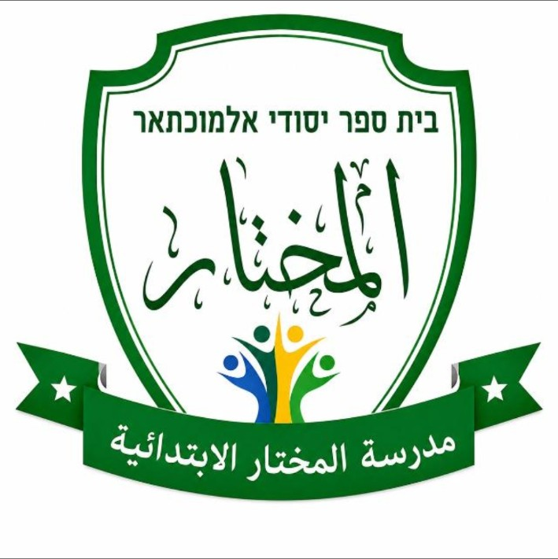

בחרו נושא | اختاروا موضوعًا
שיחות לדוגמה | محادثات نموذجية
תרגול | تدريب
האפליקציה פועלת גם ללא חיבור לרשת לאחר התקנה. השמעה תלויה בקולות העברית הזמינים במכשיר.

לוֹמְדִים • שׁוֹמְעִים • מְדַבְּרִים
האפליקציה פועלת גם ללא חיבור לרשת לאחר התקנה. השמעה תלויה בקולות העברית הזמינים במכשיר.